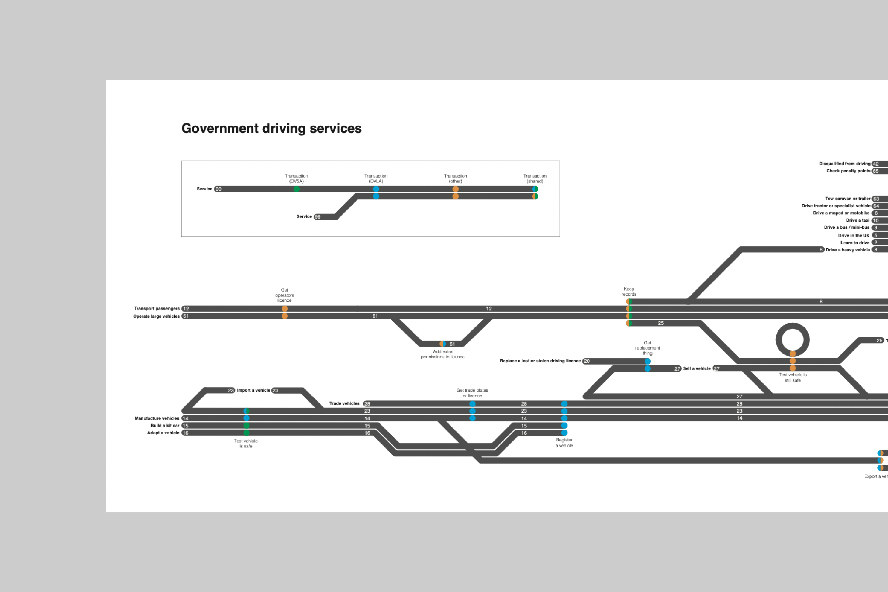

Operator Manual
British Red Cross 2020
Fires and floods discovery
British Red Cross 2019

Explaining devices that learn
Google, IF 2019

New data rights and services
Open Data Institute, IF 2018

Data use in humanitarian crisis
Oxfam, IF 2018

Open APIs for telecoms
Open Data Institute, IF 2018

Design System
GOV.UK 2017

Task list page
GOV.UK 2017

Check a service is suitable
GOV.UK 2017

Government driving services
GOV.UK 2015

Naming your service
GOV.UK 2016

Make renting simpler
pure frustration 2016

I Wish to be Rain
Studio PSK 2013
Wharfware
Design Museum 2012